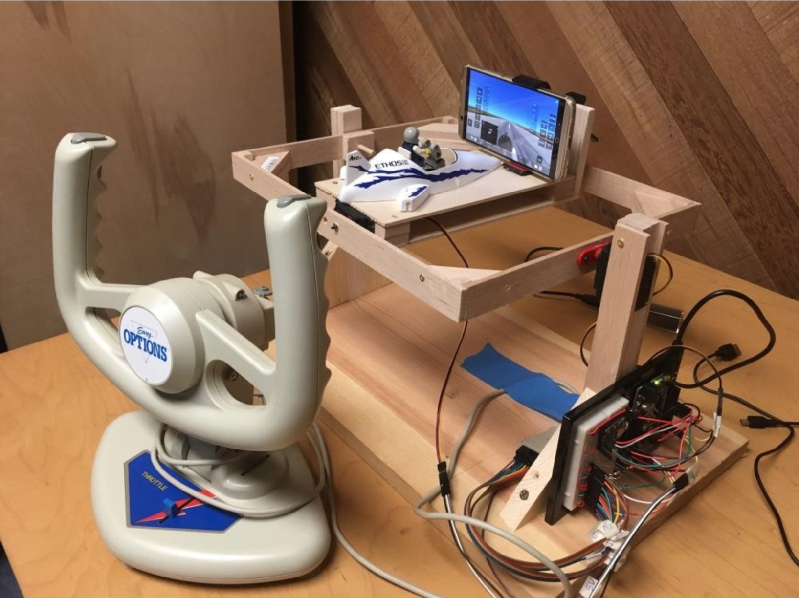

Leo Salemann
Agile Coach, Technical Leader, Lifelong Learner
Helping cat-herds become wolf-packs
Projects
-

Teaching an Arduino to Fly
An Arduino-Controlled Model Flight SimulatorIntro
There's lots of model airplanes, but what about a model flight simulator? This Project combines an Arduino, a joystick, a Flight Simulator running on an Android phone, and a plastic airplane model with a Lego pilot. The Arduino reads axis angle from the joystick to drive servos which change the orientation of a small motion platform. The platform has Android Phone running Infinite Flight, a flight simulator designed for mobile devices. As the platform pitches and rolls, the flight simulator responds as if the user were holding the phone. Components include Adafruit Metro (Arduino Uno clone) which drives drive 2 heavy-duty servos, capable of "lifting" the platform. The joystick is an old PC-game port type, providing analog pins that can be read like any potentiometer. .
Paper Prototype
Paper Prototype. Simple cardboard platform balanced on a pencil to assess the degree of platform motion required for a good flying experience. Also used to evaluate Flight Simulators and aircraft models. Infinite Flight’s A-10 proved to be fast and responsive enough for good flying, but not so skittish as to be difficult for beginners. Full video available on YouTube.
Joystick Breakout
A pair of female-to-male jumper wire ribbons directly connect PC game port joystick pins to the adafruit breadboard. No physical changes to joystick required.
Single-Axis Test
Joystick, Adafruit Metro, one servo, and balsawood platform to validate that servo is strong enough to move platform holding mobile phone and counterweight for balance. Full video available on YouTube.
Bluetooth Configuration
Bluetooth configuration. Infinite flight can be configured to read inputs from the phone accelerometer and external Bluetooth devices simultaneously. Each flight control axis (pitch, roll, …) can be configured separately, as can numerous other controls such as flaps and landing gear. Full configuration video available on YouTube.
Platform Construction
Final balsa wood platform with roll servo embedded in the back.
Added top deck, aircraft model, and initial phone mount (later replaced).
Gimbal Construction
Pitch servo embedded in right side support post (red circle). Horizontal box frame and platform pitch together; platform rolls within frame.
Inserting image...Test flight of Completed Product
White flight yoke sends pitch and roll commands to Adafruit Metro (Arduino Uno equivalent) mounted to right side of frame. Metro drives servos, moving platform. Black game controller controls throttle, flaps, landing gear through Bluetooth, direct to Android. Full video available on YouTube.
For even more fun, check out the demo flight with a Pink Floyd Soundtrack
-

Dead Switch Live
A HoloLens Mixed Reality Project
Bringing Dead Switches to LifeIntro
The Museum of Flight in Seattle has a few "sit in cockpit" exhibits. You can climb into an actual jet cockpit, settle into the seat, grab the stick, turn some knobs, and ... nothing happens. What if you wore a Mixed Reality headset that could "paint over" the gauges and make them come to life? What you could paint over the windshield to render the simulator world running past you, pitching and rolling as you yank and bank on the stick? What if it could be done without making any physical changes to the exhibit?
Physical Panel 1
The Conversation Starter
I call this one "The conversation starter." Cobbled together from trips to electronics and craft stores, the green duct tape represents areas which would be "painted over" with scenery and guages. The toggle, "steering wheel", button, slider, and key are connected to absolutely nothing. The plan was to dectet hand motions and changes in switch position through HoloLens.
Physical Panel 2
The Reality CheckAfter a late-night HoloLens tutorial session, it became clear that my Conversation Starter would be the end of my project if I tried to implement it in a day in a half. Time to lean out the physical design until all that's left is two boxes: one for the base, one for the slider. Now I could produce a "Digital Twin" of the Simple Slider Protoype in less then an hour, spending the rest of my time in the HoloLens Emulator, getting the digital slider to move in synchrony with the physical one.
It Works(ish)!
Grasping for the HoloLens gestures that were fastest to learn, I latched onto Gaze for selection and Pinch for manipulation. The red slider on the Digital Twin would move if (and only if) you stared right at it, then grasped it with a distinct pinching motion to move it. It was important let go with a pronounced opening or "unpinching" of the fingers, or the Digital button would go flying off into space as if you'd ripped it off of the panel. The net effect was similar to operating machinery when very drunk (not that I have any expereince in the matter). Having to stare straight at switch while you painstakingly maniuplate it is a far cry from keeping your eyes on the horizon while your hands do the work.
So What Did I Learn?
There's nothing like a weekend Hackathon to get you to learn, design, and build fast. Whatever cool idea you start with, be ready to trim away ninety percent of it. You'll derive far more satisfaction from a low-feature prototype that actually does something versus a lofty slide deck and an empty code repo. The judges will appreciate it, too.